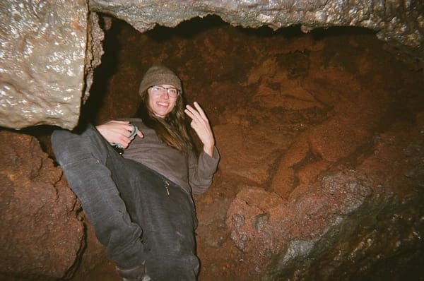
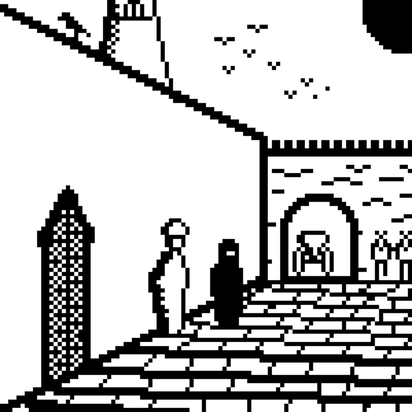
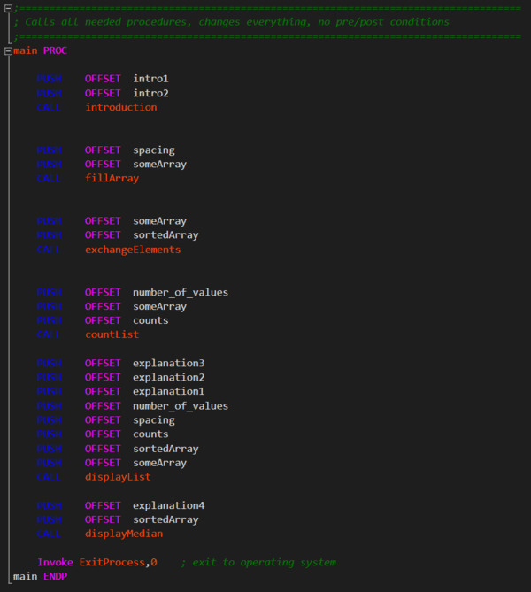
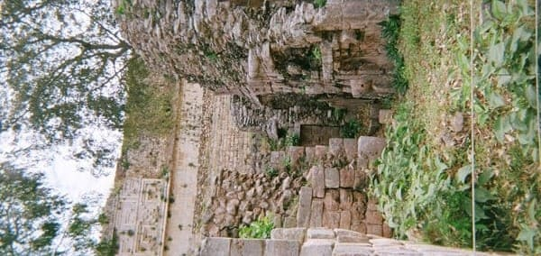
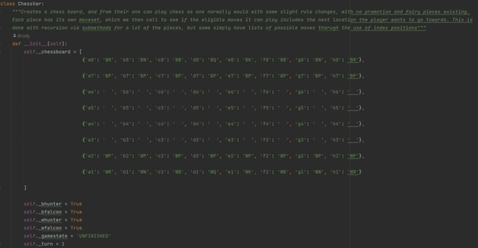
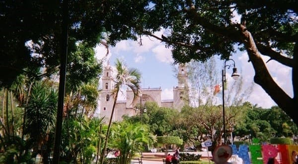
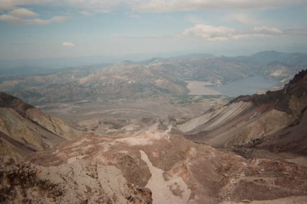
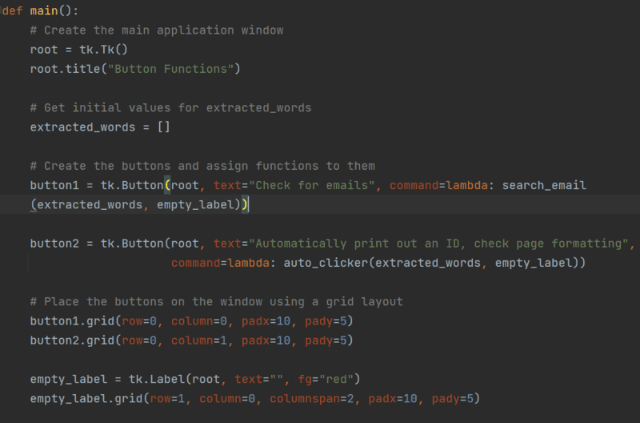

Picture of me crawling through a narrow passage at Ape Caves, the longest lava tube caves in the America's.

Monochrome pixel art I created, it shows a low resolution arab cityscape from the street level

Screenshot of the main function of a MASM program which sorts a randomized array and returns its median

Photo of some Aztec ruins I encountered in Yucatan, Mexico which shows the jungle reclaiming ruins

Screenshot of the main function of a program which allows the user to play chess, showing its initializationThis is a picture of the Cathedral in Merida, Mexico which is one of the oldest on the continent, and in my opinion the most beautiful

This is another view of the same Cathedral, this time from the plaza opposite to it, showing a bustling city center

Photo I took of the top of Mt. St. Helens, showing the view from the rim of the volcano with steam emanating from the craterScreenshot of the main function I created in MASM which generates a random array of numbers to whatever number the user inputs

This is a python function I created which automated the student ID printing process via scraping the email requests for names and student numbers, and then putting that information into the actual ID printing interface